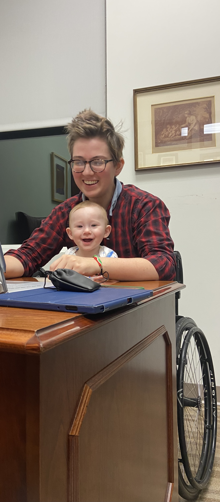

Callan (Cal for short) received their PhD in Philosophy from Rutgers University.
They work at the interface of semantics, pragmatics and psycholinguistics, with
a particular eye toward the role of perspectives in lexical meaning. Drawing on
both experimental and theoretical methodology, their research revolves around
questions like: How capable are hearers in accommodating stubborn speakers?
How conversationally flexible are lexically encoded perspectives? Do different
categories of lexical items (e.g. predicates of personal taste, relative motion
verbs, socio-cultural relative terms) exercise different constraints on the
perspectives they invoke? Topics they have worked on include relative locative
terms, socio-cultural relatives, and epithets and thick terms.